Надеюсь, предыдущий пост Back-инжиниринг Caesar III, где был описан алгоритм получения текстур из ресурсов оригинальной игры, был благосклонно встречен хабражителями. В этой статье я опишу формат карт, алгоритм выбора и порядок тайлов для отрисовки, формирование итоговой текстуры.
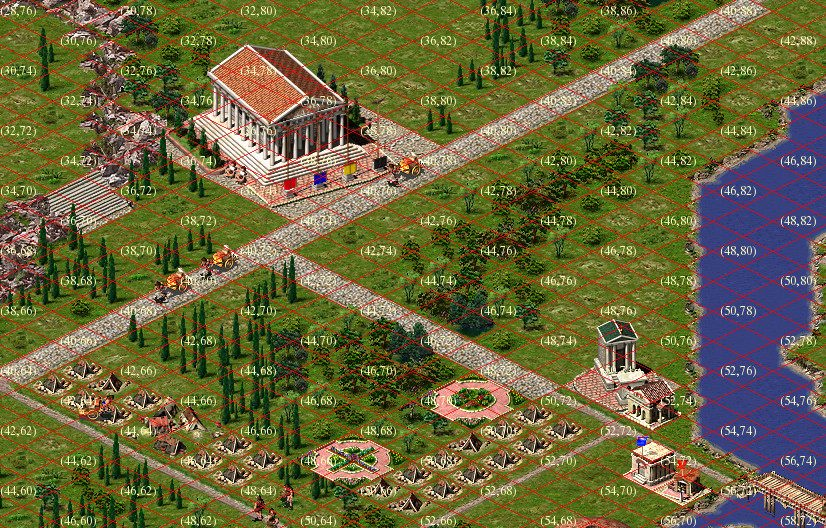
Если знаете, что такое тайл (tile), тогда следующий раздел можно пропустить. Тайлы Тайл это картинка фиксированного размера, сформированное так, чтобы при рисовании рядом с другими тайлами получалось сплошное изображение без “швов”. Вот пример текстур травы из игры Caesar III

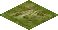

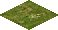
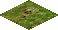


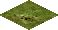
Если составить их рядом в определенном порядке и добавить немного текстур с деревьями, то получится некоторая область земли.А если внести в эту живописную картину еще один вид тайла, например, с изображением дороги, то можно уже составить примитивную карту.


Вы, наверно заметили, что представленные изображения не квадратные, а ромбовидные. Сделано это для того, чтобы придать изображению ощущение объема( глубины ). Такой тайл выглядит повернутым одним углом к зрителю и как бы уходящим вглубь, двухмерная картинка приобрела третье измерение. Для создания эффекта объема ширина должны быть меньше длины примерно в два раза. База тайла в игре Caesar III составляет 58х30 пикселей, это минимальный размер тайла, которым оперирует движок игры. На первых этапах разработки ремейка получился один неприятный эффект, текстуры в игре созданы без учета прозрачности и вывод их на экран без дополнительной обработки приводил к следующему результату.

Выход из этой ситуации следующий: либо использовать маску, например цвет крайнего левого символа принимается как прозрачный, либо текстуры дополнять альфаканалом. В оригинальной игре использовался первый вариант, в ремейке используется второй: текстуры подготавливаются на этапе загрузки ресурсов.
Карта Карта — это массив, определяющий положение тайлов на слое и их параметры. В самом простом случае карта представляет собой матрицу MxN, где каждый ее элемент содержит идентификатор(номер, число) из условной «палитры тайлов». Тайлы не обязательно имеют последовательный порядковый номер, номера тайлов разбиты на несколько интервалов и именованных пространств. Так например тайлы земли, деревьев, воды, разломов и травы имеют индексы от land1a_00001 до land1a_00303. В игре Caesar III допускается использование квадратных карт размеров от 30х30 до 160х160 тайлов. Тайл располагается на карте так, что его верхняя границы является «севером».
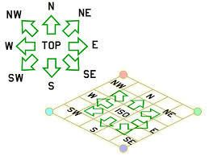
Для того, чтобы нарисовать тайлы на экране, нужно учитывать расстояние до него, если просто нарисовать тайлы в порядке их размещения на карте, то получится абракадабра, так как часть тайлов была нарисована не в свое время.

В какой последовательности нужно рисовать тайлы показывает следующее изображение.
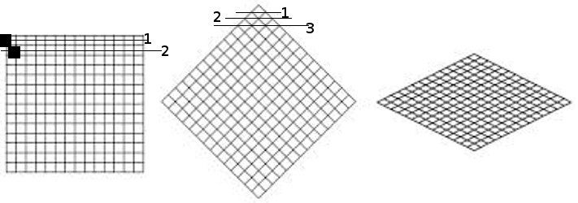
1. В первой фигуре показан порядок отрисовки тайлов на 2D карте, для создания эффекта глубины. 2. Во второй фигуре показан порядок отрисовки тайлов на 2.5D карте, учитывая, что чем выше расположен тайл, тем раньше он должен быть отрисован.
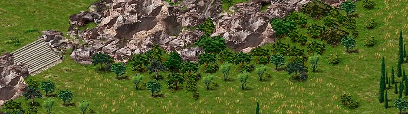
Это изображение сформировано из следующих тайлов, отрисованных в правильном порядке.
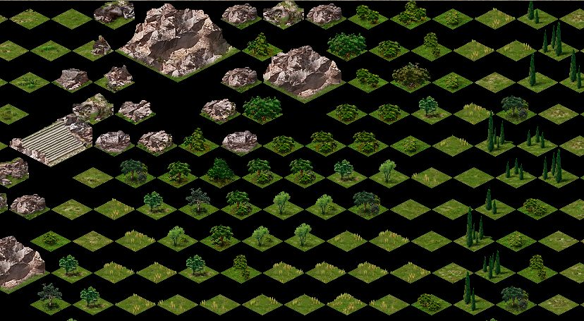
В общем случае код формирования индексов тайлов для отрисовки будет следующим:
Код формирования порядка отрисовки
// Формируем верхнюю часть «ромба» отрисовки
tilemap map; // карта поверхности
tilearray tiles; // порядок отрисовки
for( j = 0; j < map_size; j++ ) {
for( t = 0; t <= j; t++ ) {
tiles.append( map[ t, map_size - 1 - ( j - t ) ] );
}
}
// Формируем нижнюю часть «ромба» отрисовки
for( i = 1; i < map_size; i++ ) {
for( int t = 0; t < map_size - i; t++ ) {
tiles.append( map[ i + t, t ] );
}
}Рисование города Дополнительные условия, которые возникают при отрисовке города. 1. На карте расположены не только статические тайлы земли, травы, зданий, а также присутствуют подвижные объекты (люди, животные, анимация) 2. Есть объекты, через которые можно пройти (арка, ворота, амбар) 3. Дополнительная анимация тайлов и объектов 4. Неквадратные объекты
Эти условия усложняют процесс отрисовки и порождают дополнительные правила отрисовки. 1. Перемещение персонажей по изометрической карте происходит не просто так. Карта повернута “вглубь” и абсолютный ее размер по вертикали не совпадает с размером по горизонтали. Поэтому и “вверх” любой ходячий предмет должен двигаться соответствующим образом, в простейшем случае на два шага в сторону приходится один шаг вглубь. 2. Подвижный объект может находиться в разных частях тайла и рисуется он после отображения основного изображения тайла, что может вызвать артефакты отображения, например такие: колесница едет поверх ворот. Это обходится рисованием дополнительных спрайтов, которые будут показаны после отрисовки подвижных объектов.
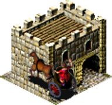

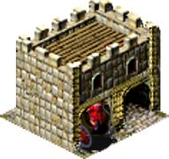
3. Анимация может выходить за размеры основного изображения, здесь следует учитывать такую особенность, что она(анимация) может уходить вверх и вправо, но не вниз и влево, иначе она будет перекрыта следующими тайлами. 4. В большинстве своем в игре используются квадратные объекты, но есть и протяженные, для упрощения алгоритма отрисовки, их бьют на более мелкие (квадратные) части, например ипподром.
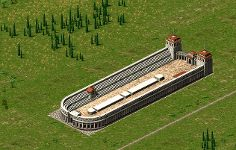


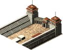
Как рисовать 1. За первый проход рисуются «плоские» тайлы и подвижные объекты на них 2. За второй проход рисуются тайлы, изображения которых может выходить за базу тайла 3. Рисуется дополнительная анимация для тайлов, которые имеют такой флаг Предваряя возможные вопросы. Этот алгоритм был восстановлен из оригинальной игры, настолько, насколько я смог его понять, возможно он будет изменен в более поздних версиях. Советы по организации цикла отрисовки приветствуются
Формат карты игры Caesar III Непосредственно к объектам, которые будут отображены в городе, в файле *.map относятся первые пять блоков данных. Читаем с начала файла, вычитываем данные друг за другом без пропусков.
short tile_id[26244] — содержит идентификаторы элементов, каждый идентификатор соотносится со своей текстурой. Например группа идентификаторов 246-548, соответствует текстурам land1a_00001-land1a_00303, это текстуры земли, деревьев и др., которые были описаны выше. byte edge_data[26244] — массив содержит информацию о размерах объекта, для которого выбрана текстура в массиве tile_id short terrain_info[26244] — массив содержит характеристики поверхности для конкретного тайла, земля, вода, дорога, стена и др. (полная информация по этим флагам) byte minimap_info[26244] — базовая информация для построения миникарты, также участвует в некоторых вычислениях в ходе игры, выступая своего рода массивом «случайных чисел». byte height_info[26244] — этот массив описывает высоту тайла над поверхностью, 0 — для земли, 1 — 15 пикселей, 2 — 30 пикселей и тд.
Практическое применение Более подробную информацию об игре Caesar III и ходе разработки ремейка вы можете найти в нашей вики на bitbucket.org. Отдельное спасибо Bianca van Schaik за помощь в написании статьи и предоставленные материалы.
И напоследок небольшой тестовый скриншот, этрусские копьеносцы бесчинствуют в городе фонтанов:
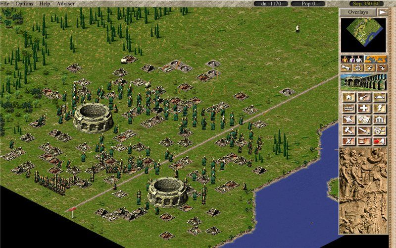
← Все статьи